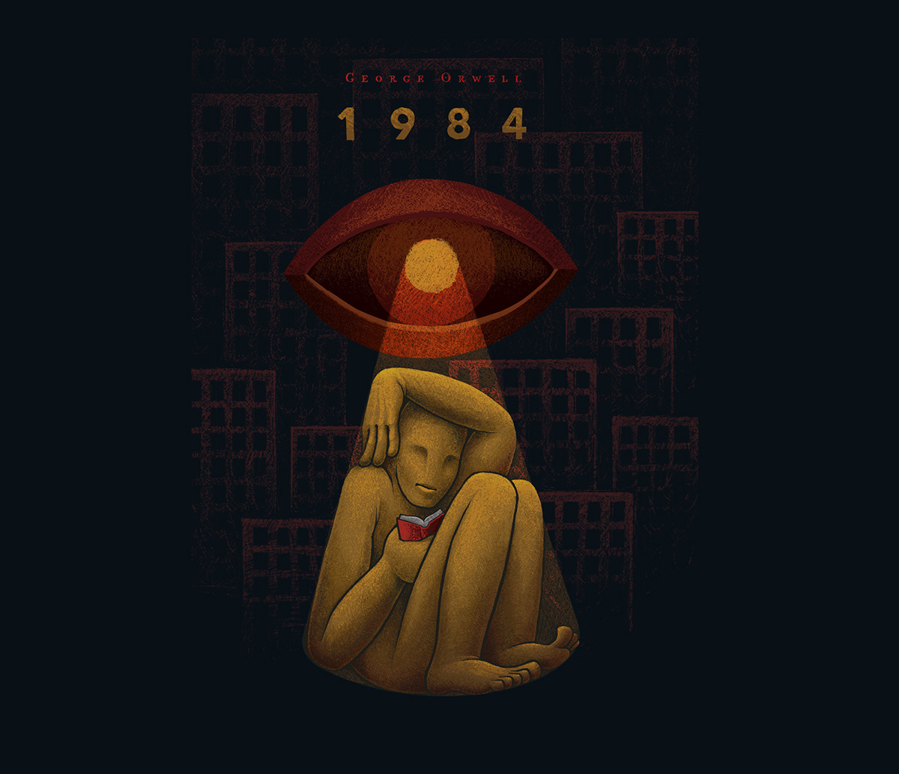

La Sombra del "Gran Hermano" en nuestra Era.
Publicado el 12 de febrero de 2026
En 1984, George Orwell describió un mundo bajo la vigilancia constante del "Gran Hermano", un símbolo de control totalitario que observa cada movimiento, cada palabra. Hoy, esa visión parece menos una ficción y más una realidad. Cámaras en las calles, algoritmos que rastrean nuestras búsquedas, redes sociales que registran nuestras interacciones al milímetro, el uso de la IA para huir de nuestro propio pensamiento o decisión: la vigilancia moderna es ubicua, pero a menudo invisible.
Empresas tecnológicas y gobiernos recopilan datos a una escala nunca antes vista. De hecho, pienso que la gran parte de nuestros datos, los atesoran menos de 100 corporaciones. Piensa en gigantes como Meta (que posee Whatsapp, Facebook, Instagram y Threads), Google, Amazon, Apple... Me atrevo a decir que solo estos cuatro concentran la mayor parte de la recolección de datos comerciales y publicitarios a nivel global. A día de hoy, a esto le podemos sumar el uso diario de la IA. Estos datos no solo alimentan anuncios personalizados, sino que pienso que pueden moldear narrativas, influir en elecciones y, en algunos casos, restringir libertades. La pregunta no es si nos observan, sino qué hacen con lo que ven.
La resistencia comienza con la conciencia. Proteger nuestra privacidad, cuestionar las políticas de datos y buscar alternativas descentralizadas son pasos hacia un futuro donde el "Gran Hermano" no tenga tanto poder. ¿Estamos dispuestos a renunciar a la comodidad por la libertad?
Hasta la próxima reflexión,
R.